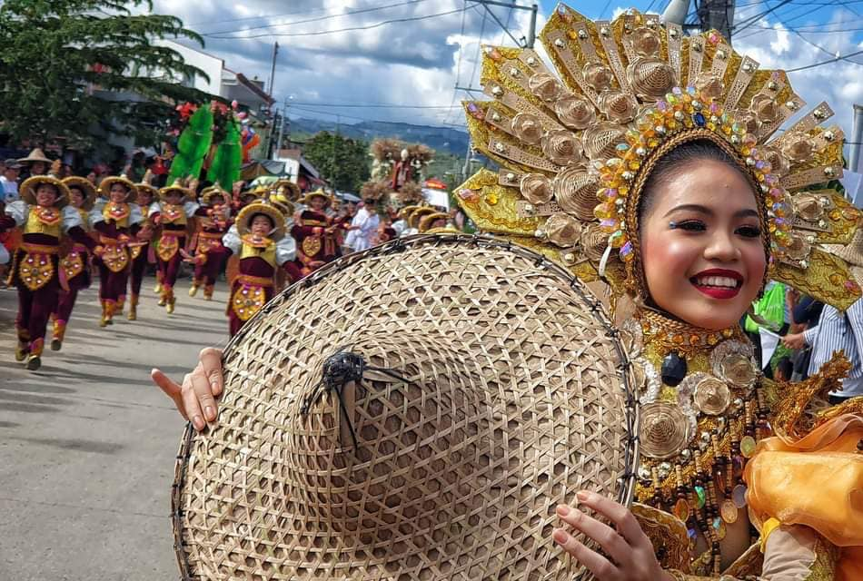

Nestled in the heart of Cebu, Consolacion is a town rich in culture, tradition, and community spirit. Known for its warm hospitality and festive atmosphere, this vibrant municipality hosts a variety of events and festivals throughout the year that celebrate its history and heritage.
Let's explore the most popular events and festivals you won't want to miss!
Sarok Festival is an ode to the agricultural way of life and the work of the farmers of the pioneering settlers of the town by giving the spotlight on sarok, which is worn by farmers out in the fields and paddies as a durable, weather-proof shield. A typical sarok can cover the face, neck, and part of the shoulders of the wearer, allowing them to work outdoors for hours on end by protecting them either from the rain or the sun.
The term sarok describes an eco-friendly, all-natural hat crafted from bamboo strips and dried banana leaves. It features a wide, flat circular brim with a center that rises into a conical, pointed top.
The annual festival is also a celebration of the creativity, livelihood, and revival of this traditional handicraft. Women are often the ones creating the hats and earning an income by selling them. Sarok-weaving is thought to have emerged in the post-war years and the hats began to be sold in other towns. Eventually, it has given way to a cottage industry particularly in the village of Tulotulo and sarok becoming an export-quality product.
The Tayuran Festival pays homage to the rich historical roots of Barangay Tayud, bringing its vibrant past to life through cultural festivities.
Now in its second year, the festival has expanded to include an exciting range of activities such as street dancing, a ritual showdown, and the much-anticipated selection of a festival queen.
Former Tayud barangay captain Blessilda Villo drew inspiration from a festival initiated by Cebu Province Governor Gwen Garcia, aiming to create an event that reflects the unique history of Tayud.
Historically, Barangay Tayud faced frequent raids from Muslim warriors due to its strategic coastal position and ancient harbors. According to the book “History of Consolacion” published by Cebu Province, the name Tayuran refers to someone struck by a weapon that remained embedded in their body — a vivid testament to the resilience of Tayud’s ancestors.
The Feast of Señor San Narciso is a cherished annual celebration dedicated to their patron saint, San Narciso. This vibrant event brings the community together in a spirit of faith and festivity, blending religious traditions with local culture.
The celebration typically features a solemn Mass in honor of San Narciso, followed by a lively procession through the barangay. Families prepare special meals, and the streets come alive with music, dance, and cultural performances. It’s a time for both spiritual reflection and joyful community bonding, showcasing Tayud’s deep-rooted devotion and cultural heritage.